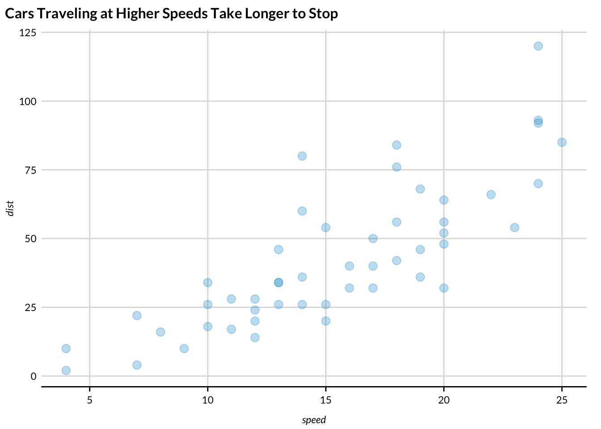

cars |>
ggplot(aes(x = speed, y = dist)) +
geom_point(alpha = 0.3) +
labs(title = "Cars Traveling at Higher Speeds Take Longer to Stop") +
scatter_grid()

This set of notes introduces advanced Quarto concepts including params and embed-resources YAML headers, mathematical notation, cross references, and citations. The Quarto website includes more gems and is an example of high-quality technical documentation.
Most options that change the behavior of code chunks can be set for all code chunks in a document using execute in the YAML header.
For example, if we want to turn off warnings for the entire document, we can include
execute:
warning: falseHere are some of the most useful options:
| Option | Effect |
|---|---|
echo: false |
Hides code in output |
eval: false |
Turns off evaluation |
output: false |
Hides code output |
warning: false |
Turns off warnings |
message: false |
Turns off messages |
fig-height: 8 |
Changes figure width in inches |
fig-width: 8 |
Changes figure height in inches |
Quarto documents have YAML headers, which can contain many output specific settings. This YAML header creates an HTML document with code folding and a floating table of contents:
---
format:
html:
embed-resources: true
code-fold: true
toc: true
--- One key specification in the YAML header are parameters or params. Here is an example:
---
format: html
params:
state: "Virginia"
---Now state can be referred to anywhere in R code as params$state.
Parameters are useful for a couple of reasons:
quarto_render() function and library(purrr). This blog describes the idea and provides example code! The Mobility Metrics Data Tables and SLFI State Fiscal Briefs are key examples of this workflow. The code to create the Mobility Metrics Data Tables is publicly available on Github.Unlike R Markdown, images and other content are not embedded in .html from Quarto by default. Be sure to include embed-resources: true in YAML headers to embed content and make documents easier to share.
Suppose we embed an image called image.png in a Quarto document called example.qmd, which, when rendered, creates example.html. If we don’t include embed-resources: true, then we will need to share image.png and example.html to see the embedded image. This is also true for other files like .css which is useful to provide custom styling for websites.
The Markdown text for creating headers is important for visual styles, section numbering, tables of contents, and cross references.
# Section Header {#sec-one}
## Subsection Header {#sec-two}
### Minor Section Header {#sec-three}The extra syntax to the right of the section is necessary for cross references.
Quarto has powerful tools for including images. It also includes native tools for adding alt text directly to images. For example, the following code generates the subsequent image:
{#fig-stenomylus fig-alt="A sketch of two stenomylus."}Quarto also allows for easily laying out multiple figures.
:::{#fig-camels-combo layout-ncol=2}
{#fig-stenomylus}
{#fig-camels}
Stenomylus and Camels
:::
Quarto works well with library(ggplot2). Consider an examples using the cars dataset, which contains speed and dist for 50. Figure 5.3 shows two histograms displaying the distributions of speed and dist individually.
ggplot(cars, aes(x = speed)) +
geom_histogram(bins = 15) +
labs(title = "Histogram of speeds")
ggplot(cars, aes(x = dist)) +
geom_histogram(bins = 15) +
labs(title = "Histogram of distances")speeds
dists
Figure 5.4 displays the relationship between these two variables in a scatterplot.
The default for df-print is kable. This is the only type of table that works with the table references. kable works well until there is tons of data, where paged thrives.
Table 5.1 displays basic summary statistics for these two variables.
cars |>
summarise(
`Median speed` = median(speed),
`IQR speed` = IQR(speed),
`Median dist` = median(dist),
`IQR dist` = IQR(dist),
`Correlation, r` = cor(speed, dist)
) |>
kable(digits = c(0, 0, 0, 0, 2))| Median speed | IQR speed | Median dist | IQR dist | Correlation, r |
|---|---|---|---|---|
| 15 | 7 | 36 | 30 | 0.81 |
Quarto has access to Mermaid and Graphviz for creating diagrams. Here is a simple example from the Quarto documentation:
flowchart LR
A[Hard edge] --> B(Round edge)
B --> C{Decision}
C --> D[Result one]
C --> E[Result two]
We can fit a simple linear regression model of the form shown in Equation 5.1.
\[ dist = \hat{\beta}_0 + \hat{\beta}_1 \times speed + \epsilon \tag{5.1}\]
Table 5.2 shows the regression output for this model.
Let’s fit a more complicated multiple linear regression model of the form shown in Equation 5.2.
\[ dist = \hat{\beta}_0 + \hat{\beta}_1 \times speed + \hat{\beta}_2 \times speed ^ 2 + \epsilon \tag{5.2}\]
Table 5.3 shows the regression output for this model.
dist_fit2 <- lm(dist ~ poly(speed, degree = 2, raw = TRUE), data = cars)
dist_fit2 |>
tidy() |>
kable(digits = c(0, 0, 2, 2, 2))| term | estimate | std.error | statistic | p.value |
|---|---|---|---|---|
| (Intercept) | 2 | 14.82 | 0.17 | 0.87 |
| poly(speed, degree = 2, raw = TRUE)1 | 1 | 2.03 | 0.45 | 0.66 |
| poly(speed, degree = 2, raw = TRUE)2 | 0 | 0.07 | 1.52 | 0.14 |
Use $ to start and stop in-line math notation and $$ to start multi-line math notation. Math notation uses LaTeX’s syntax for mathematical notation.
Here’s an example with in-line math:
Consider a binomially distributed random variable, \(X \sim binom(n, p)\).
Here’s an example with a chunk of math:
\[ P(X = x) = {n \choose x} p ^ x (1 - p) ^ {n - x} \tag{5.3}\]
Math mode recognizes basic math symbols available on your keyboard including +, -, *, /, >, <, (, and ).
Math mode contains all greek letters. For example, \alpha (\(\alpha\)) and \beta (\(\beta\)).
| LaTeX | Symbol |
|---|---|
\alpha |
\(\alpha\) |
\beta |
\(\beta\) |
\gamma |
\(\gamma\) |
\Delta |
\(\Delta\) |
\epsilon |
\(\epsilon\) |
\theta |
\(\theta\) |
\pi |
\(\pi\) |
\sigma |
\(\sigma\) |
\chi |
\(\chi\) |
Math mode also recognizes \(\log(x)\) (\log(x)) and \(\sqrt{x}\) (\sqrt{x}).
Superscripts (^) are important for exponentiation and subscripts (_) are important for adding indices. y = x ^ 2 renders as \(y = x ^ 2\) and x_1, x_2, x_3 renders as \(x_1, x_2, x_3\). Brackets are useful for multi-character superscripts and subscripts like \(s_{11}\) (s_{11}).
It is useful to add symbols to letters. For example, \bar{x} is useful for sample means (\(\bar{x}\)), \hat{y} is useful for predicted values (\(\hat{y}\)), and \vec{\beta} is useful for vectors of coefficients (\(\vec{\beta}\)).
Math mode supports fractions with \frac{x}{y} (\(\frac{x}{y}\)), big parentheses with \left(\right) (\(\left(\right)\)), and brackets with \left[\right] (\(\left[\right]\)).
Math mode has a symbol for summation. Let’s combine it with bars, fractions, subscripts, and superscipts to show sample mean \bar{x} = \frac{1}{n}\sum_i^n x_i, which looks like \(\bar{x} = \frac{1}{n}\sum_i^n x_i\).
\sim is how to add the tilde for distributed as. For example, X \sim N(\mu = 0, \sigma = 1) shows the normal distribution \(X \sim N(\mu = 0, \sigma = 1)\).
Matrices are are a little bit more work in math mode. Consider the follow variance-covariance matrix:
\begin{bmatrix}
s_{11}^2 & s_{12}\\
s_{21} & s_{22}^2
\end{bmatrix}\[ \begin{bmatrix} s_{11}^2 & s_{12}\\ s_{21} & s_{22}^2 \end{bmatrix} \]
This guide provides and exhaustive look at math options in Quarto.
Math mode is finicky! Small errors like mismatched parentheses or superscript and subscript errors will cause Quarto documents to fail to render. Write math carefully and render early and often.
This document is littered with cross references. Cross references require labeling objects. For example:
## Cross references {#sec-cross-references}
$$
dist = \hat{\beta}_0 + \hat{\beta}_1 \times speed + \epsilon
$$ {#eq-slr}After labeling objects, simply reference the tags with @.
The numbers in cross references automatically update when additional referenced objects are added (e.g. a table is added before table 1).
Tabset panels are a useful way to collapse related information.
| speed | dist |
|---|---|
| 4 | 2 |
| 4 | 10 |
| 7 | 4 |
| 7 | 22 |
| 8 | 16 |
| 9 | 10 |
| 10 | 18 |
| 10 | 26 |
| 10 | 34 |
| 11 | 17 |
| 11 | 28 |
| 12 | 14 |
| 12 | 20 |
| 12 | 24 |
| 12 | 28 |
| 13 | 26 |
| 13 | 34 |
| 13 | 34 |
| 13 | 46 |
| 14 | 26 |
| 14 | 36 |
| 14 | 60 |
| 14 | 80 |
| 15 | 20 |
| 15 | 26 |
| 15 | 54 |
| 16 | 32 |
| 16 | 40 |
| 17 | 32 |
| 17 | 40 |
| 17 | 50 |
| 18 | 42 |
| 18 | 56 |
| 18 | 76 |
| 18 | 84 |
| 19 | 36 |
| 19 | 46 |
| 19 | 68 |
| 20 | 32 |
| 20 | 48 |
| 20 | 52 |
| 20 | 56 |
| 20 | 64 |
| 22 | 66 |
| 23 | 54 |
| 24 | 70 |
| 24 | 92 |
| 24 | 93 |
| 24 | 120 |
| 25 | 85 |
::: {.panel-tabset}
## Section 1
Content!
## Section 2
Content!
:::
This template is incomplete and we are always looking for help to expand it!
Caution, quarto is so powerful you may abandon LaTeX.
Reproducible work is a cornerstone of quality research. Quarto makes reproducible work easy and fun.
Use library(urbntemplates) to access Urban Institute quarto templates.
Quarto may transform the way the Urban Institute communicates research.
Here is an inline note1, footnote2, and a much longer footnote.3
Long notes can contain multiple paragraphs.
The notes are created with the following:
Here is an inline note^[The tooltip is pretty cool!], footnote[^1], and a much longer footnote.[^longnote]
[^1]: I suppose the footnotes are really more endnotes.
[^longnote]: The longnote gives the ability to add very long footnotes.
Long notes can contain multiple paragraphs.
The notes are created with the following:Zotero is a free and open-source software for organizing research and managing citations.
DOIs are persistent identifiers that uniquely identify objects including many academic papers. For example, 10.1198/jcgs.2009.07098 identifies “A Layered Grammar of Graphics” by Hadley Wickham.
Zotero has a powerful integration with Quarto. In practice, it’s one click to add a DOI to Zotero and then one click to add a citation to Quarto.
RStudio automatically adds My Library from Zotero. Simply switch to the Visual Editor (top left in RStudio), click “Insert”, and click “Citation”. This will open a prompt to insert a citation into the Quarto document.
The citation is automatically added with parentheses to go at the end of sentences. Delete the square brackets to convert the citation to an in-line citation.
Inserting the citation automatically adds the citation to the references section. Deleting the reference automatically deletes the citation from the references section.
Zotero Groups are useful for sharing citations and Zotero Group Libraries need to be added to RStudio. To set this up:
To set this up, in RStudio:
Quarto includes 25 themes that can be changes using the theme: option in a YAML header.
Sassy Cascading Style Sheets (.scss) files allow for programming styles. The 25 custom themes linked above are supported by .scss files that describe their style with code. The Urban Institute has an unofficial .scss file to put Quarto documents in the Urban style.
.scss is the best way to change the overall style of .html output from Quarto.